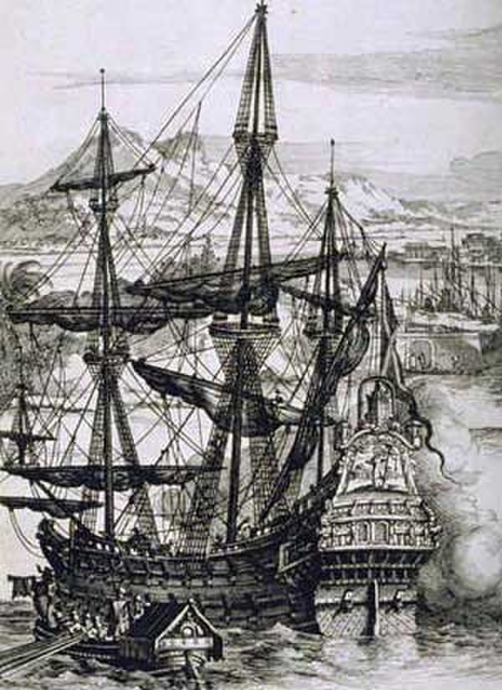

CS-E5480 Digital Ethics·Group Presentation
Digital Piracy
An Ethical Examination
Piracy resists easy moral judgment. Depending on whose interests are foregrounded (the consumer priced out of fragmented platforms, the creator whose livelihood depends on compensation, or the buyer who discovers their "purchase" was only ever a licence), the same act can appear as a rational response, an ethical violation, or a symptom of a broken system. These four problems do not always agree; instead they represent many viewpoints across a widely debated matter.

Four Perspectives
I
The Consumer's Perspective
Set Sail →II
The Creator's Perspective
Set Sail →III
Ownership and Licensing
Set Sail →IV
The Government's Perspective
Set Sail →Where the Charts Converge